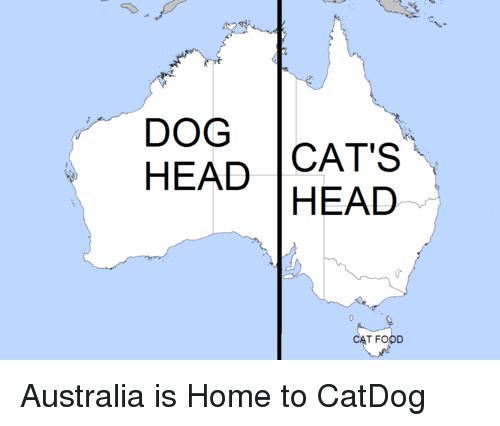

Lily Hayward GIS and Project Portfolio
(✿◠‿◠)
Geog 370
Github PNG Map
World Projections
Georeferencing UNC Image
Georeference a Historical Image from USGS
Census Data Choropleth and Ratios
Choropleth or Proportional Symbol Map
Geoprocessing Analysis
Complete Streets Final Project
Plan 639 Designs
Sustainable Triangle Field Site Capstone Project
STFS Capstone Project
Geography 491
Geography 491 Data Aggregation
Geography 491 final project
ENEC 420
Encec 420 Carborro site redesign using SketchUp
GEOG 215
215 final project FEMA risk choropleth
Enjoy this amazing meme (I cited my sources too)

Twitter link for the meme